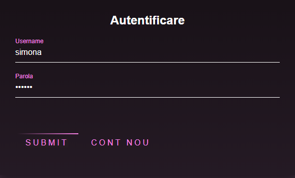
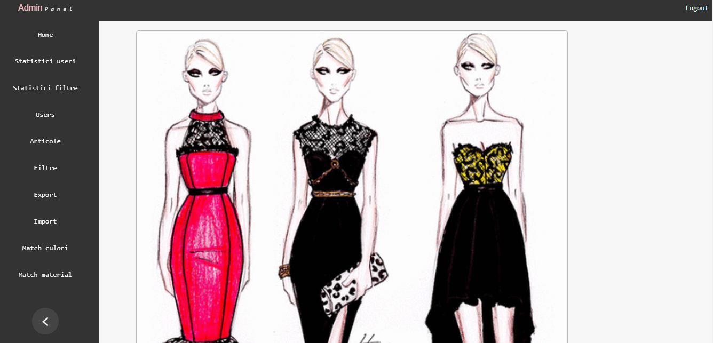

Community Draft
Aplicatia vine in ajutorul celor care sunt pasionati de fashion si doresc sa fie la curent cu ultimele tendinte in privinta outfiturilor sau a asortarilor de culori si materiale.
Scopul acestui ghid de utilizare este de a oferi supert utilizatorilor si de a le prezenta functionalitatile oferite de aplicatie.
Aplicatia poate fi accesata din browsere precum Googke Chrome, Edge, Mozilla Firefox, Opera.
Linkul catre repository-ul unde se gaseste aplicatia:
ClomatPentru a realiza inregistrarea se va merge in pagina Login si se va apasa butonul "Cont nou".
In pagina de inregistrare catre care va fi redirectat, utilizatorul va completa campurile dorite, descrise mai jos.
Dupa completarea datelor cerute se va apasa butonul Submit pentru a crea noul cont care urmeaza a fi folosit in aplicatie.
Dupa ce s-a completat formularul de inregistrare si s-a creat nout cont, utilizatorul va primi un email de confirmare pe adresa pe care a folosit-o la creare. Dupa ce va accesa linkul din email, acesta va fi redirectat pe pagina principala a aplicatiei de unde se poate apoi loga si o poate utiliza.
Autentificarea se va face pe baza username-ului si a parolei completata in formularul de inregistrare. Dupa completarea corecta a datelor si verificarea acestui lucru se va apasa butonul Submit pentru a avea acces in aplicatie.
In cazul in care utilizatorul nu a completat corect datele, acesta va fi notificat corespunzator.
De asemenea, in cazul in care utilizatorul nu introduce date in campurile cerute, va fi notificat si rugat sa le introduca.

Dupa ce utilizatorul s-a logat cu succes, acesta va fi redirectat catre pagina de profil, unde isi poate visualiza datele personale, poate adauga rude , sterge articole pe care anterior le-a salvat si deconcta din aplicatie
Utilizatorul aplicatiei va avea la dispozitie in pagina principala a aplicatie sugestii de asortari pentru articolele ce compun un outfit in functie de criterii cromatice si ce tin de materiale.
Daca utilizatorul este unul autentificat atunci el va avea la dispozitie optiunea de a selecta articole si de a le salva. Articolele salvate vor fi ulterior puse la dispozitie in pagina de profil.

Utilizatorul are la dispozitie in cadrul paginii de inspiratie posibilitatea de a cauta si vizualiza articole
Acesta poate realiza cautarea in functie de mai multe criterii, spre exemplu : eveniment, culoare, material, anotimp, etc.
Dupa selectarea filtrelor si apasarea butonului de cautare, utilizatorul va putea vizualiza rezultate obtinute sub forma unor imagini reprezentative. De asemenea, daca vorbim de un utilizator autentificat, acesta poate selecta si salva articole.
Aplicatia are la dispozitie si un modul de administrare, la care administratorul va avea acces doar dupa o logare.
In cadrul dashboardului, administratorul poate vizualiza statistici si poate face managementul utilizatorilor, articolelor, filtrelor de cautare si a regulilor de asortare.De asemenea, poate face import(in format xml/json) si export( in format csv) de date.
Administratorul poate vedea care a fost traficul in aplicatie in fiecare zi sub forma unui grafic. Astfel, acesta poate avea o evidenta asupra numarului de pasionati de fashion care folosesc aplicatia.
Deoarece tendintele in moda se schimba des si preferintele utilizatorilor se vor modifica la fel de rapid. Astfel, administatorul are la dispozitie o statistica a celor mai utilizate filtre, statistica pe baza careia poate mai tarziu sa aduca imbunatatiri aplicatiei si se poate adapta la cerintele utilizatorilor.
Modulul de administrare pune la dispozitia administratorului optiunea de a realiza managementul utilizatorilor. Astfel el poate adauga sau sterge utilizatori si poate adauga de asemenea alti administratori care il pot ajuta.
Deoarece se doreste ca utilizatorii sa aiba o experienta cat mai placuta atucni cand utilizeaza aplicatia, administratorul poate adauga, sterge sau modifica articole, oferind astfel o gama larga de alegere.
Utilizatorii doresc sa obtina sugestii de outfituri cat mai deosebite, de aceea se impune ca administratorul sa poata adauga, stege sau edita filtrele pe baza carora de vor realiza cautarile.
Administratorul poate de asemenea sa realizaze exportul datelor in format csv.
Avand o aplicatie destul de complexa, pentru a usura munca administratorului in ceea ce priveste adaugarea de articole, acesta are la dispozitie importul de date in format xml sau json.
Bazandu-ne pe faptul ca sugestiile de outfituri se realizeaza pe un match de culori, aceste matchuri se pot administra in cadrul dashboardului in sectiunea Match culori.
Sugerarea outfiturilor se realizeaza si pe baza asocierilor de materiale, prin urma se impune o administrare si pentru matchurile de materialE. Acestea pot fi adaugate, sterse sau editate.